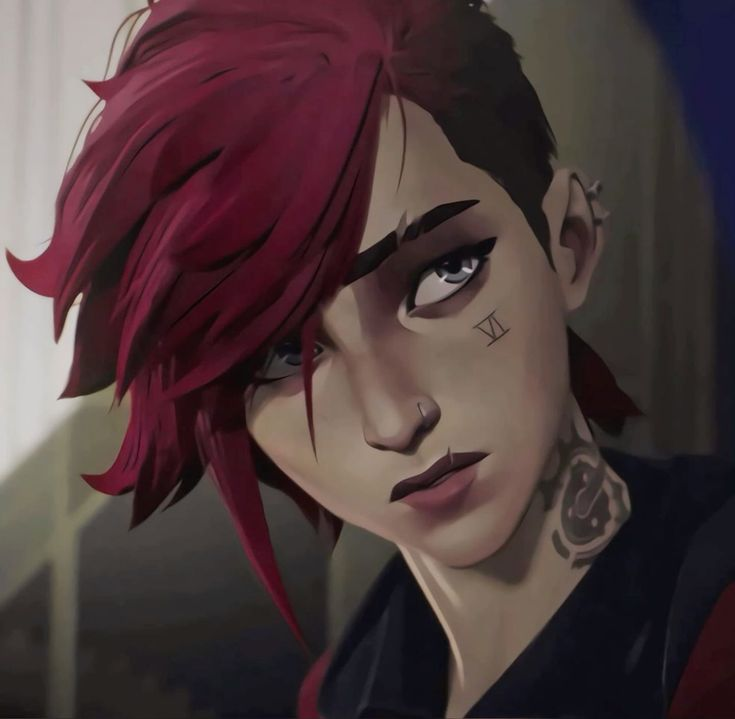
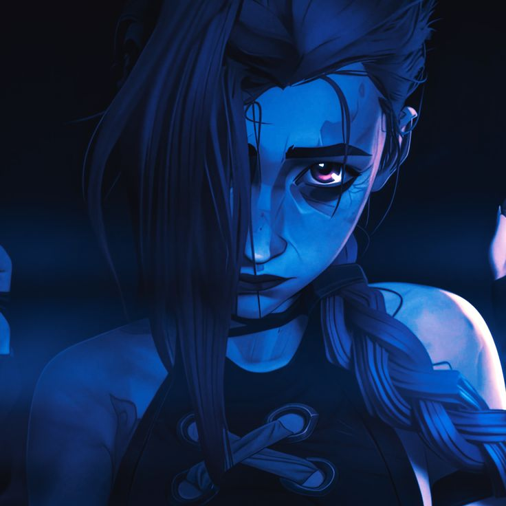
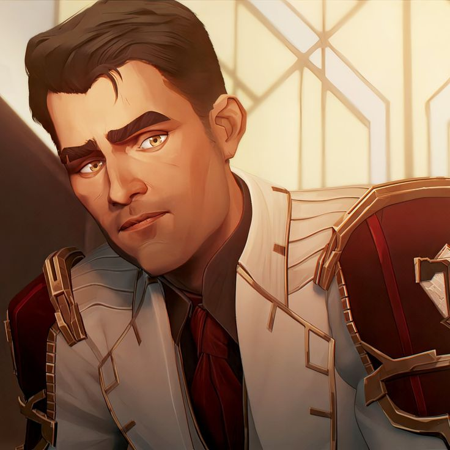
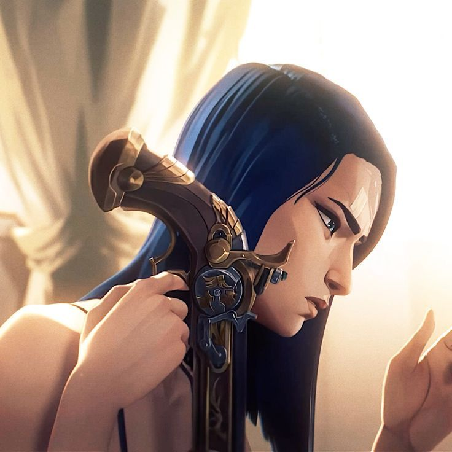
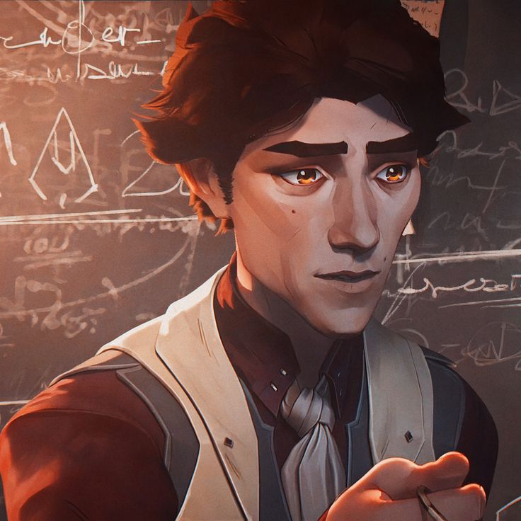

Uma História de Amores e Feridas
*Arcane* não é apenas uma série; é um mergulho profundo em uma narrativa visualmente deslumbrante e emocionalmente impactante. Situada entre as cidades de Piltover e Zaun, a história explora temas de amor, traição, ambição e o peso das escolhas. Cada personagem carrega em si uma história única que ressoa com nossas próprias lutas e anseios. É uma obra que transcende o universo de *League of Legends*, tocando o coração de quem nunca jogou e emocionando ainda mais os fãs dedicados.
Personagens Principais
Vi
Vi é uma jovem determinada e resiliente, com um coração marcado por perdas e uma alma em busca de justiça. Ela representa a força e a vulnerabilidade que coexistem em todos nós. Sua jornada é marcada pela busca de equilíbrio e redenção, enfrentando adversidades tanto no âmbito pessoal quanto social.
Jinx
Jinx é uma personagem complexa e imprevisível, uma verdadeira representação de um espírito ferido. Sua busca por conexão e reconhecimento é um dos arcos mais emocionantes da série, sendo uma jornada que mistura dor, caos e desespero. Sua história é um retrato de como o abandono e o trauma podem moldar uma pessoa.
Jayce
Jayce é um visionário que deseja revolucionar o mundo com tecnologia, acreditando que seu trabalho pode trazer um futuro melhor para todos. Sua trajetória é marcada pelo dilema entre ambição e responsabilidade, e as consequências de se carregar o peso do progresso. Sua busca por inovação é inspiradora, mas também é cheia de desafios pessoais e morais.
Caitlyn
Caitlyn é uma defensora da justiça, com um forte senso de moral e uma determinação imbatível. Ela traz equilíbrio à narrativa, representando a luta por integridade em um mundo quebrado. Seu papel é crucial, pois ela luta contra as injustiças sociais e os sistemas opressores em Piltover, enfrentando tanto ameaças externas quanto dilemas internos.
Viktor
Viktor é um homem de ciência, um idealista que busca usar sua mente brilhante para transformar o mundo. Embora suas intenções sejam nobres, ele enfrenta dilemas profundos sobre até onde deve ir em nome da inovação. Seus experimentos e decisões levantam questões sobre a ética da ciência e os limites do que é considerado "justo" em busca do progresso.
Curiosidades
*Arcane* é a primeira série animada da Riot Games e foi um sucesso mundial instantâneo ao estrear na Netflix.
A animação foi criada em parceria com o estúdio francês Fortiche, conhecido por seu estilo visual único.
A trilha sonora, que inclui canções marcantes como "Enemy" do Imagine Dragons, é uma das grandes estrelas da série.
A série ganhou aclamação tanto de críticos quanto de jogadores por sua qualidade narrativa e visual.
Mesmo quem não conhece *League of Legends* pode se apaixonar por *Arcane*, já que a série funciona como uma obra independente e profundamente humana.